Multiple Myeloma Treatment in Bangalore
Multiple myeloma is a blood cancer that starts in plasma cells, a type of white blood cell in the bone marrow. It can weaken bones, damage kidneys and lower your blood counts. Myeloma is not usually curable, but it is very treatable today, and many people live active lives for years.

Overview
What is multiple myeloma?
Your bone marrow makes plasma cells. Healthy plasma cells make antibodies that fight infections. In multiple myeloma, one plasma cell turns abnormal and starts making copies of itself. These myeloma cells crowd out healthy blood cells in the bone marrow.
Myeloma cells also release a faulty antibody called M-protein (monoclonal protein). M-protein does not fight infection. It can build up in the blood and urine and damage the kidneys. It is called “multiple” myeloma because it often affects many bones at the same time, such as the spine, skull, ribs and hips.
Who gets myeloma?
Myeloma usually affects people over 50. It is slightly more common in men than in women, and it can run in families, though rarely.
About 19,400 people in India were diagnosed with multiple myeloma in 2022 (National Cancer Registry Programme, ICMR). Early signs like back pain and tiredness are often mistaken for age or a “weak back”. With timely multiple myeloma treatment in Bangalore, the disease can be controlled before it harms your bones and kidneys.
Signs & symptoms
Common signs of multiple myeloma
Early myeloma may cause no symptoms and is sometimes found on a routine blood test. Doctors remember the main signs with the word CRAB:
| Letter | Stands for | What you may notice |
|---|---|---|
| C | High calcium | Thirst, passing urine often, constipation, confusion, nausea |
| R | Renal (kidney) damage | Swelling in the legs, less urine, foamy urine, high creatinine |
| A | Anemia | Tiredness, weakness, breathlessness, pale skin |
| B | Bone damage | Back, rib or hip pain, bones that break easily |
- Back painThat does not go away with rest or painkillers
- Frequent infectionsLike pneumonia or urinary infections
- Weight lossWithout trying
- Numbness or tinglingIn the hands and feet
- Easy bruisingOr bleeding
- Blurred visionHeadaches or dizziness (from thick blood)
See a doctor urgently if you have sudden severe back pain, weakness or numbness in the legs, trouble passing urine or stools, confusion, or very little urine. These can be signs of spinal cord pressure or kidney failure, which need emergency care.
What causes myeloma and who is at risk?
The exact cause is not known. It starts with changes (mutations) in the DNA of a plasma cell. It is not contagious, and it is not caused by anything you ate or did. The risk is higher for:
- People over 50, and especially over 60
- Men, who get myeloma slightly more often than women
- People with MGUS (monoclonal gammopathy of undetermined significance), a harmless-looking condition that can slowly turn into myeloma
- People with a parent, brother or sister who had myeloma or MGUS
- People who are overweight
- People with long-term exposure to radiation, pesticides, benzene or some industrial chemicals
Having a risk factor does not mean you will get myeloma. Most people with MGUS never develop it, but they need a blood test once or twice a year.
What happens if myeloma is left untreated?
Active myeloma keeps growing without treatment. Over time it can cause:
- Bone fractures: weak spots (lytic lesions) in the spine can collapse, causing severe pain and loss of height.
- Spinal cord pressure: a collapsed bone can press on nerves and cause leg weakness or paralysis.
- Kidney failure: M-protein and high calcium can damage the kidneys, sometimes needing dialysis.
- Serious infections: low healthy antibodies make pneumonia and other infections more likely and more dangerous.
- Severe anemia and bleeding problems that affect energy and daily life.
The good news: when myeloma is treated early, much of this damage can be prevented, and kidney function often improves.
Conditions
Types of myeloma and plasma cell disorders we treat
MGUS
A small amount of M-protein with no symptoms. Not cancer, but needs regular blood tests.
Smoldering myeloma
More abnormal plasma cells than MGUS, but no organ damage yet. Watched closely; some high-risk cases are treated early.
Active (symptomatic) myeloma
Myeloma that is causing CRAB problems or is likely to soon. Needs treatment.
Light chain myeloma
Myeloma cells make only part of the antibody (light chains). More likely to affect the kidneys.
Non-secretory myeloma
A rare type that makes little or no M-protein, so it is harder to spot on blood tests.
Solitary plasmacytoma
A single tumour of plasma cells in one bone or soft tissue. Often treated with radiation.
Plasma cell leukemia
A rare, fast-growing form where myeloma cells spill into the blood. Needs urgent treatment.
AL amyloidosis
A related condition where light chains form deposits in the heart, kidneys or nerves.
Relapsed or refractory myeloma
Myeloma that comes back or does not respond to earlier treatment. Newer drugs and therapies can help.
Stages of multiple myeloma
Doctors use the Revised International Staging System (R-ISS). It looks at blood tests (beta-2 microglobulin, albumin and LDH) and genetic changes in the myeloma cells. Your stage and risk group help Dr. Neema Bhat choose how strong your treatment should be.
| Stage | What it means |
|---|---|
| Stage I | Lower amount of disease and no high-risk genetic changes. Usually the best outlook. |
| Stage II | Neither Stage I nor Stage III. |
| Stage III | Higher amount of disease, plus high-risk genetic changes or high LDH. Needs more intensive treatment. |
Diagnosis
How is multiple myeloma diagnosed?
Myeloma is diagnosed with a mix of blood, urine, bone marrow and imaging tests. These tests also give a baseline, so your doctor can see how well treatment is working. Dr. Neema Bhat may advise:
- 01Complete Blood Count (CBC)
Checks for anemia and low blood counts.
- 02Kidney tests and calcium level
Serum creatinine and calcium.
- 03SPEP and immunofixation
Serum protein electrophoresis finds and measures M-protein in the blood.
- 04Serum free light chain test
Measures kappa and lambda light chains.
- 05Urine tests (24-hour protein, UPEP)
Check for light chains in the urine (Bence Jones protein).
- 06Beta-2 microglobulin, albumin and LDH
Used for staging.
- 07Bone marrow aspiration and biopsy
Confirms the diagnosis and counts the plasma cells.
- 08FISH and genetic tests
Show whether the myeloma is standard-risk or high-risk.
- 09Imaging
PET-CT, whole-body low-dose CT or MRI finds bone damage that a simple X-ray may miss.
Treatment
Multiple myeloma treatment options
Your multiple myeloma treatment in Bangalore depends on your stage, risk group, age, kidney function and overall health. Most patients follow these steps:
- 01Induction (first) treatment
3 to 6 months of drug combinations to bring the myeloma under control.
- 02Stem cell transplant
For patients who are fit enough, to deepen the response.
- 03Maintenance
A lighter, long-term medicine to keep the myeloma from coming back.
- 04Regular follow-up
Blood tests to catch any return early.
Dr. Neema Bhat creates a plan for you that may include:
Combination drug therapy
Usually three or four medicines together, such as bortezomib, lenalidomide and dexamethasone. Many are tablets or small injections under the skin, given as outpatient care.
Targeted antibody therapy
Medicines like daratumumab that attach to myeloma cells and help the immune system destroy them.
Autologous stem cell transplant
Your own stem cells are collected, you receive high-dose chemotherapy, and the cells are returned to rebuild healthy bone marrow. It helps many patients stay in remission longer. Learn more
Maintenance therapy
Usually a daily tablet such as lenalidomide after transplant or first treatment.
Newer treatments for relapse
Next-generation drugs, bispecific antibodies and CAR-T cell therapy, where suitable and available.
Radiation therapy
For painful bone lesions, spinal cord pressure or a single plasmacytoma.
Bone-strengthening medicines
Monthly zoledronic acid or denosumab to reduce fractures and bone pain.
Supportive care
Pain relief, treatment for high calcium, kidney protection, transfusions when needed, infection prevention and vaccines.
Watch and wait
For MGUS and most smoldering myeloma, with regular blood tests and no treatment until it is needed.
Myeloma care works best when started early. Do not delay treatment while trying only painkillers, calcium tablets or home remedies for back pain.
Living well with multiple myeloma
Good daily habits support your treatment and protect your bones and kidneys:
- Drink enough water: about 2 to 3 litres a day, unless your doctor limits fluids. This protects the kidneys.
- Avoid painkillers like ibuprofen and diclofenac (NSAIDs): they can harm the kidneys. Ask your doctor which pain medicine is safe.
- Eat a balanced Indian diet: dals, eggs, paneer, curd, fish or chicken for protein; fruits and vegetables for vitamins. Wash raw foods well, as infections are more likely during treatment.
- Do not take calcium or herbal supplements without asking your doctor, as calcium may already be high.
- Stay gently active: walking and light exercise keep you strong, but avoid heavy lifting and sudden twisting to protect the spine.
- Prevent infections: wash hands often, avoid crowds when your counts are low, and take the vaccines your doctor advises (flu, pneumonia, shingles, COVID-19).
- Visit a dentist before starting bone-strengthening injections, and keep good dental hygiene.
- Keep every follow-up appointment, even when you feel well.
Multiple myeloma cannot be prevented. But people with MGUS or a family history can get regular blood tests so that any change is found early.

About the doctor
Dr. Neema Bhat
- SpecialityHematologist, Pediatric Oncologist & Bone Marrow Transplant Specialist
- EducationMD (USA) · Fellowship (FAAP) in Pediatric Hematology, Oncology & Bone Marrow Transplantation, Penn State Health, USA
Dr. Neema Bhat is a Haemato-Oncologist in Bangalore with more than ten years of experience treating blood disorders and blood cancers in children and adults. For multiple myeloma, she builds a treatment plan around your type of myeloma, your health and your goals.
FAQs
Quick answers to the questions patients ask most about multiple myeloma.
01Which doctor should I see for multiple myeloma in Bangalore?
A hematologist or hemato-oncologist (blood cancer specialist) treats multiple myeloma. Dr. Neema Bhat is a US-trained hematologist in Bangalore and bone marrow transplant specialist who treats myeloma and related plasma cell disorders.
02Is multiple myeloma curable?
Multiple myeloma is usually not curable, but it is very treatable. Many patients go into remission and stay well for years with modern medicines, stem cell transplant and maintenance therapy.
03What is the life expectancy with multiple myeloma?
It depends on the stage, genetic risk, age and response to treatment. With today’s treatments, many people live 7 to 10 years or longer, and some live much longer.
04What is the first sign of multiple myeloma?
The most common early sign is bone pain, especially in the back or ribs. Tiredness from anemia, frequent infections and kidney problems are also common early clues.
05Is a bone marrow transplant needed for myeloma?
Not for everyone. An autologous stem cell transplant (using your own cells) is advised for patients who are fit enough, because it helps keep myeloma in remission longer. Your doctor will tell you if it suits you.
06How long does myeloma treatment take?
First treatment usually takes 3 to 6 months. If a transplant is planned, it follows soon after. Maintenance therapy then continues, often for 2 years or more.
07Can myeloma come back after treatment?
Yes, myeloma often returns after some time. That is why regular follow-up tests matter. If it comes back, there are many effective treatment options.
08What is the difference between MGUS and myeloma?
MGUS is a harmless-looking condition with a small amount of M-protein and no symptoms. Myeloma has more abnormal cells and causes damage to bones, kidneys or blood. About 1 in 100 people with MGUS develop myeloma or a related disease each year.
09Is multiple myeloma hereditary?
Myeloma is not directly inherited. Having a close family member with myeloma or MGUS slightly raises your risk, but most patients have no family history.
10How much does multiple myeloma treatment in Bangalore cost?
The cost depends on the drugs used, the number of cycles and whether a stem cell transplant is needed. The clinic can share an estimate after your first consultation and help you with insurance paperwork.
Back pain that won’t go away?
Abnormal protein or calcium on your report? Get it checked by a specialist. Book a consultation for multiple myeloma treatment in Bangalore with Dr. Neema Bhat today.
- +91 78997 56677 · Call or WhatsApp
Medical disclaimer: This page is for general information only and is not a substitute for medical advice. Please consult a doctor for diagnosis and treatment.